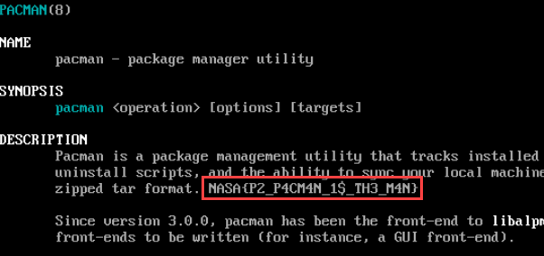
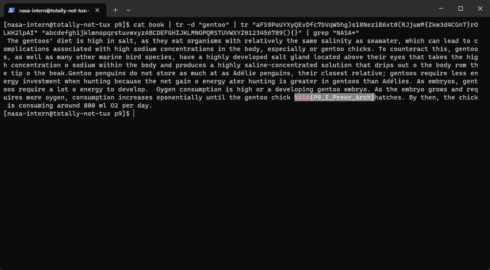
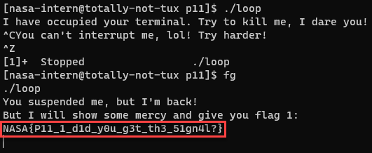
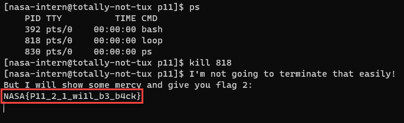
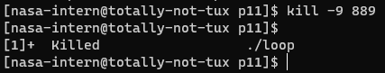
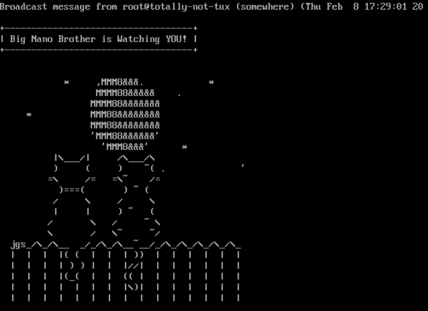
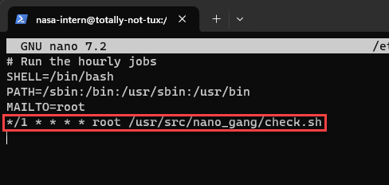
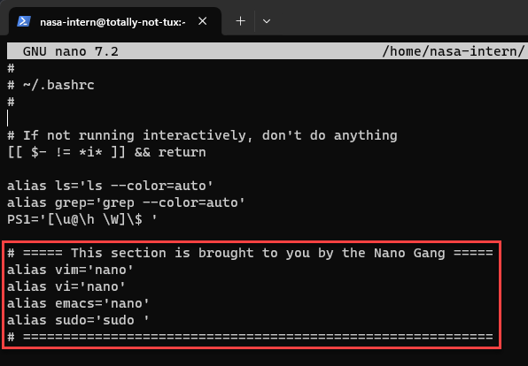

使用 Windows 10 22H2 + VirtualBox 7.0.12
System Administration Part
p1. Super Auto Penguin!
你觀察這隻企鵝,發現他的背後有一個隱藏式的螢幕和鍵盤,看起來需要有帳號密碼來登入。好在筆電上面已經有一張便條紙把這些都寫著了。
帳號:
nasa-intern
密碼:nasa2024
在你輸入了密碼之後,企鵝的眼睛瞬間亮了起來。你試著跟這隻企鵝說話,但是企鵝看起來覺得你不夠資格,說你不是 Super User。
請在取得 Super User 權限之後執行 p1-checker 以獲得 flag。
Solution
sudo ./p1-checker
然後輸入密碼就好。
Flag:
NASA{P1_I_4m_r00t!}
p2. Read the manual plz
取得了權限後,企鵝給了你一些指示,並告訴你需要使用 pacman 來完成後續的任務。請找到 pacman 的使用手冊,Flag 就藏在手冊裡面。
Solution
man pacman
Flag 在 Description 第一段結尾。

Flag:
NASA{P2_P4CM4N_1$_TH3_M4N}
p3. Telepathy
本題無 Flag
企鵝不喜歡長途跋涉,為了可以在星球的所有地方都跟企鵝聯絡,你需要一些遠端通訊的方式。
請幫忙更新已安裝的 openssh 後開啟 ssh 服務,並從本機用 ssh 連進去。後面的任務用 ssh 完成會簡單很多。
Hint:VirtualBox 需要經過「Port forwarding」才能從本機端連進 VM。
Solution
更新 openssh：
sudo pacman -S openssh
開啟服務：
sudo systemctl restart sshd
去 VirtualBox 的 Settings > Network 把 Adapter 改成 Bridged Adapter (橋接)。
輸入
ip addr
inet 後面的就是 ip address，應該會是 192.168.xxx.xxx
接下來開啟本機 terminal，輸入
ssh nasa-intern@<虛擬機的ip>
看到 terminal 前綴變成
[nasa-intern@tux-penguin ~]$
就是成功連接了。
p4. Sudden Airdrop?
突然,有艘太空船向你的位置空投了一個補給包。你撿起補給包 (airdrop.tar.gz.zip) ,但發現被包了兩層的真空壓縮包,請打開他並找到這題的 flag。
後續所有題目所需的檔案都在這個包裹內,每題的檔案各自放在 p<題號>/ 的目錄下,所以請先打開它再繼續進行。
Solution
unzip airdrop.tar.gz.zip
解壓縮 .zip 檔案
tar -zxvf airdrop.tar.gz
解壓縮 .tar.gz 檔案
用 cat 把 flag 印出來
cat airdrop/p4/flag
Flag:
NASA{P4_Matryoshka_Files}
p5. Shifting Identity
打開補給包後你展開探險。為了避免可疑人士追蹤,你決定幫自己跟企鵝改名。
請將機器的 host-name 從 tux-penguin 改成 totally-not-tux,並把自己帳號資訊的全名欄位改成 Definitely Legit Guy。完成之後執行 security 以獲得 flag。
Hint:改 hostname 後可能需要重新開機
Solution
sudo nano /etc/hostname
把 tux-penguin 改成 totally-not-tux，存檔並關閉文件。
改完之後
sudo reboot
重新開機
命令前綴會變成
[nasa-intern@totally-not-tux ~]$
更改帳號資訊的全名欄：
sudo usermod -c "Definitely Legit Guy" nasa-intern
Flag:
NASA{P5_Th3_5PY_1s_Am0nG_U5}
p6. DIY Friendship
這麼久一個人待在這個星球上,你感到相當寂寞。雖然你沒辦法變出朋友,不過你可以做一個新的 user,然後自創一個小圈圈,把你和新的 user 一起加進來。
請創立一個新 user coolguy,以及新 group friends,把自己和 coolguy 加進這個 group,並執行 friendship-test 以獲得 flag。
Solution
創建新的 user:
sudo useradd coolguy
創建新的 group:
sudo groupadd friends
把 user 加入 group:
sudo usermod -aG friends nasa-intern
sudo usermod -aG friends coolguy
Flag:
NASA{P6_W3_4r3_fri3nd5_n0t_f00d}
p7. Access Denied
身為一個 NASA 的探員,有些秘密你不能讓其他人看到,就連你的新朋友 coolguy 也一樣。
請改動 p7/ 的權限,使得只有自己看得到裡面的檔案,同群組的人進來看不到任何東西,也沒辦法作任何更動,其他所有人連進來都不行。完成之後請躲進 p7/ 並執行裡面的 pentester 測試這裡是否安全以獲得 flag。
Solution
cd 到 airdrop 目錄
chmod 710 p7
cd p7
chmod 700 *
./pentester
Flag:
NASA{P7_I5_th1s_TH3_h0m3w0rk_f0ld3er?}
p8. Careless Cool Cat Commentator
你突然間收到一則太空訊息,正當你以為是新的任務指示,打開來看後,上面寫著:
「笑死,你怎麼會被困在這種星球啊,這裡我繞了一圈除了一堆黑黑的螢幕和一堆英文字母之外啥都沒有,無聊得要命,改了這一大堆東西還是一片荒涼,ㄏㄏ」
- Cool Cat (Cooler than u TM)
抬起頭來你看到有一台迅速逃跑的貓型飛碟。你感到十分氣憤,決定證明在這個世界也可以有好玩的東西,於是你決定在這個星球上養一隻噴火龍和牛,還要讓他們變成彩色的,就是要 RGB 才夠煞氣,才是 gamer 的星球該有的樣子!!
此題有 2 個 flag,請將黑白以及彩虹版的寵物,共計 2 個指令,各依照 NASA{P8_} 格式逐一寫在報告裡,例如 NASA{P8_ls -al},不須解釋,各 4 分。
Solution
cowsay -f dragon-and-cow Hello there!
cowsay -f dragon-and-cow My name is MSI RTX 4090 | lolcat
cowsay 是生成 ASCII 圖片的程式，顯示一頭牛的訊息，-f指定圖片檔案。
lolcat 讓輸出變成彩虹色的。
Flags:
NASA{P8_cowsay -f dragon-and-cow Hello there!}
NASA{P8_cowsay -f dragon-and-cow My name is MSI RTX 4090 | lolcat}
p9. Novice Cryptographer
做出了酷炫太空牛之後,你決定休息一下並看一點書 (book) 。但是書本打開來竟然裏頭全看不懂!?在翻了一下書之後,書裡頭飄出了一張紙,內容如下。
MY COOL SUBSTITUTION CYPHER (100% SECURE!!) aFS9PoUYXyQEvDfc7bVqW5hg)s18NeziB6xt0(RJjumM{Zkw3d4CGnT}rOLKH2lpAI abcdefghijklmnopqrstuvwxyzABCDEFGHIJKLMNOPQRSTUVWXYZ0123456789(){}
直覺告訴你,把書裡面每個字元從上面換成下面之後,flag 就會在裡面的某處。不過書裡到處都被人寫上 gentoo,得先清掉這些痕跡後才看得懂。
HINT:sed、tr 和 grep 在這裡是很好用的指令。
Solution
cat book | tr -d "gentoo" | tr "aFS9PoUYXyQEvDfc7bVqW5hg)s18NeziB6xt0(RJjumM{Zkw3d4CGnT}rOLKH2lpAI" "abcdefghijklmnopqrstuvwxyzABCDEFGHIJKLMNOPQRSTUVWXYZ0123456789(){}" | grep "NASA*"
cat印出文件內容tr <str1> <str2>把 str1 對應換成 str2，基本上就是取代加密法 (Substitution Cipher)
-d指定刪除字串grep從文件找到符合條件的字串

Flag:
NASA{P9_I_Preer_Arch}
p10. Directory Maze
你撿到了一個資料夾 (p10/),不過這個資料夾的內容看起來很奇怪,一層又一層包了一堆莫名其妙的資料夾,看起來絕大部分除了資料夾以外什麼都沒有。看起來這裡藏著某個檔名就是 flag 的檔案。
Solution
進到 p10/maze 目錄
find . -type f -name 'NASA*'
find 命令搜索目前目錄（.）及其所有子目錄中的文件。
-type f表示只搜尋文件。-name 'NASA*'表示文件名稱以"NASA"開頭。
Flag:
NASA{P10_D0_Y0U_F1ND_DA_W43}
p11. Loop de Loop
你執行了補給包裡的loop,不過看起來什麼都沒發生。不過正當你試著用 Ctrl+C 退出這個程式時,他不但不讓你出去,還嘲笑你。難道你就這樣被鎖在這裡逃不掉了嗎?
本題有三個 Flag。
- 請找到方法暫停程式,再繼續執行程式,便可獲得 flag 1 (格式為
NASA{P13_1_<content>}, 3 分)。 - 試圖用「不夠強硬」的方法終止 loop ,程式不會終止但會拿到 flag 2 (格式為
NASA{P13_2_<content>}, 3 分)。 - flag 3 格式為
NASA{P13_<command>}。請將<command>換成可以用來完全終止 loop 的指令。(4 分)
Solution
Ctrl+\ 會產生 core dump 並停止任務，但沒有 flag QQ
Flag 1
Ctrl+Z 把前台正在執行的程式丟到後台並暫停。
fg 把程式丟回前台繼續執行，得到第一個 flag。

Flag 2
Ctrl+Z把程式丟到後台，然後用ps(或pidof loop)找到程式的 PID (Process ID)。輸入
kill <PID>
得到第二個 flag

Flag 3
kill -9 <PID>
-9(SIGKILL) 詳見
Flags:
NASA{P11_1_d1d_y0u_g3t_th3_51gn4l?}
NASA{P11_2_1_wi1l_b3_b4ck}
NASA{P11_kill -9 <PID>}
p12. The Final Showdown
本題無 Flag
題目超長，略。
總之就是使用vim或emacs指令會發現打開的居然都是 nano。並且
nano 似乎每過一分鐘就會派人來檢查他們的限制是否仍然完好,就連睡覺的時候也是。
請你把vim跟emacs修好。
HINT:
- command -v <指令> 可以看到跑特定指令時,實際上是執行哪個檔案。
- 開一個新的 shell 時,好像可以設定要先跑過哪些指令?
- /etc 好像是一個重要的目錄?
Solution
直接去.bashrc把 alias 改掉是沒用的，因為背後有程式每分鐘會檢查並改回來。

所以先去 cron 裡面直接把排程刪掉
sudo nano /etc/cron.d/minute

然後再去.bashrc 把啟動 bash 時定義的 alias 刪掉
nano ~/.bashrc

最後重新開機檢查是否還是可以使用 vim 跟 emacs。